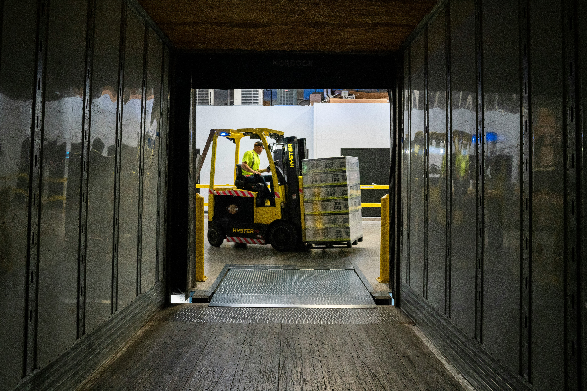

Handling processed meats requires specialized infrastructure, tight temperature monitoring, and rapid turnover. Kealedira Holdings offers end-to-end distribution solutions tailored to the strict requirements of chilled food products.
Daily and weekly scheduled deliveries straight to supermarket doors, butcheries, and wholesale outlets.
Fully refrigerated delivery vehicles maintaining strict temperature ranges from departure to drop-off.
Temperature-regulated warehousing facilities equipped with continuous monitoring.
First-In, First-Out (FIFO) stock management ensuring maximum shelf-life for retailers.
High-volume supply options designed for regional distributors, institutional caterers, and food stalls.
Flexible order volumes to accommodate businesses of all scales.
Strategic partnership opportunities for processed meat manufacturers seeking to expand market reach.
Direct access into established township, urban, and rural retail networks.